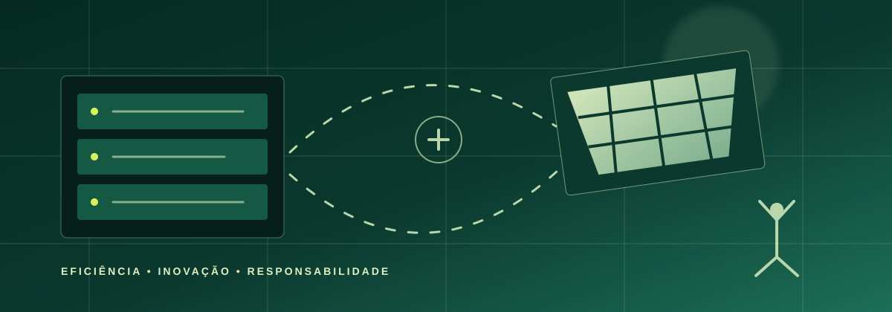

◌
Reduzir
Evitar desperdícios de energia, materiais e equipamentos.
TECNOLOGIA COM PROPÓSITO
A TI Verde mostra que computadores, sistemas e serviços digitais podem ser mais eficientes, responsáveis e sustentáveis.
01 — O CONCEITO
TI Verde, ou Tecnologia da Informação Verde, reúne práticas que diminuem os impactos ambientais da tecnologia.
Ela considera todo o ciclo de vida de um produto: da escolha de materiais e fabricação até o uso, a reutilização e o descarte. Não se trata de abandonar a tecnologia, mas de utilizá-la de maneira mais inteligente.
Evitar desperdícios de energia, materiais e equipamentos.
Ampliar a vida útil dos dispositivos com manutenção e reparo.
Encaminhar resíduos eletrônicos a pontos de coleta adequados.
02 — NA PRÁTICA
Pequenas escolhas técnicas podem gerar impactos positivos em grande escala.

Equipamentos e programas que realizam mais usando menos eletricidade.
Servidores com melhor resfriamento, monitoramento e fontes renováveis.
Código eficiente consome menos processamento, dados e bateria.
Reparo, recondicionamento e reciclagem evitam o descarte prematuro.
03 — DATA CENTERS E ENERGIA
Data centers guardam, processam e distribuem os dados que usamos todos os dias.
de eletricidade consumida por data centers no mundo em 2024.
é a projeção para 2030 no cenário-base da IEA.
Isso equivale a sair de cerca de 1,5% para quase 3% do consumo global de eletricidade. Fonte: IEA, 2025.
O indicador PUE mostra quanta energia extra é usada além dos equipamentos de TI. Quanto mais próximo de 1, melhor.
Projeto térmico adequado, equipamentos modernos e uso responsável da água reduzem a energia necessária para refrigerar servidores.
Fontes renováveis, armazenamento e contratos de energia limpa ajudam a reduzir as emissões associadas ao consumo elétrico.
Virtualização, melhor aproveitamento dos servidores e tarefas flexíveis em horários mais limpos evitam desperdício de processamento.
de lixo eletrônico foram geradas no mundo em 2022.
Fonte: ITU e UNITAR, 202403 — POR QUE IMPORTA
O uso da tecnologia depende de eletricidade, matérias-primas e equipamentos físicos. Quando descartados incorretamente, eletrônicos podem liberar substâncias nocivas e desperdiçar materiais valiosos.
A TI Verde ajuda a transformar esse cenário: reduz custos, preserva recursos e incentiva uma inovação que considera as pessoas e o meio ambiente.
Conferir as fontes utilizadas →04 — SUA PARTE
Cuide, atualize e repare seus dispositivos antes de trocá-los.
Desligue equipamentos ociosos e ative configurações de economia.
Nunca misture eletrônicos ao lixo comum; procure um ponto de coleta.
Priorize aparelhos duráveis, eficientes e de marcas com logística reversa.
05 — QUEM JÁ APLICA
São práticas divulgadas pelas próprias empresas e acompanhadas em suas fontes oficiais.
Seus data centers tiveram PUE médio de 1,09 em 2025, e a empresa mantém a meta de operar com energia livre de carbono 24 horas por dia até 2030.
Ver fonte oficial ↗A empresa trabalha para ser carbono negativo, positiva em água e gerar zero resíduos até 2030, combinando eficiência, energia renovável e circularidade.
Ver fonte oficial ↗As instalações corporativas, lojas e data centers da Apple usam eletricidade renovável; a empresa também prioriza materiais reciclados, reparo e recuperação de componentes.
Ver relatório oficial ↗A Dell descreve projetos modulares e pensados para reparo, reuso e reciclagem — uma forma de manter produtos e materiais em uso por mais tempo.
Ver fonte oficial ↗06 — INDÚSTRIA, INOVAÇÃO E INFRAESTRUTURA
O ODS 9 busca construir infraestrutura resiliente, promover industrialização sustentável e fomentar inovação. A TI Verde ajuda a transformar a infraestrutura digital em uma solução mais eficiente e responsável.
Data centers eficientes, bem planejados e com energia mais limpa tornam os serviços digitais mais confiáveis e diminuem impactos ambientais locais.
Economia circular, equipamentos eficientes, energia renovável e redução de resíduos modernizam a infraestrutura de forma ambientalmente mais correta.
Novos sistemas de resfriamento, software otimizado e materiais reciclados incentivam pesquisa e soluções tecnológicas para os desafios ambientais.
Relação baseada nas metas 9.1, 9.4 e 9.5 da ONU. Conhecer o ODS 9 ↗
DESCARTE CORRETO NO BRASIL
FONTES PARA SE APROFUNDAR
As informações do site foram baseadas em instituições públicas e internacionais.
07 — QUESTIONÁRIO
Responda de forma rápida e simples para avaliar o nível de conhecimento da população.